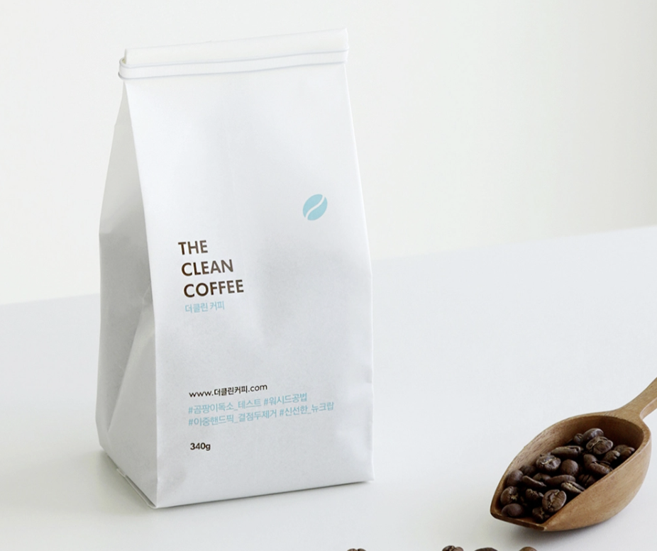
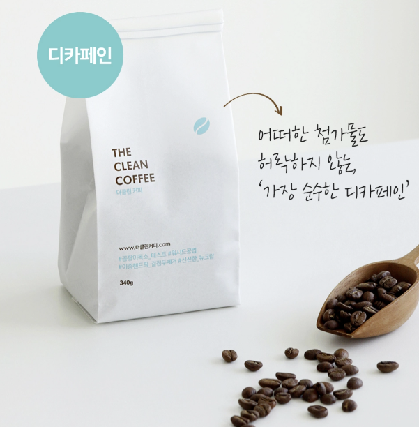
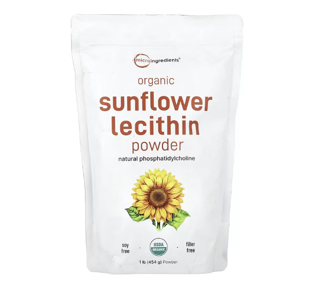
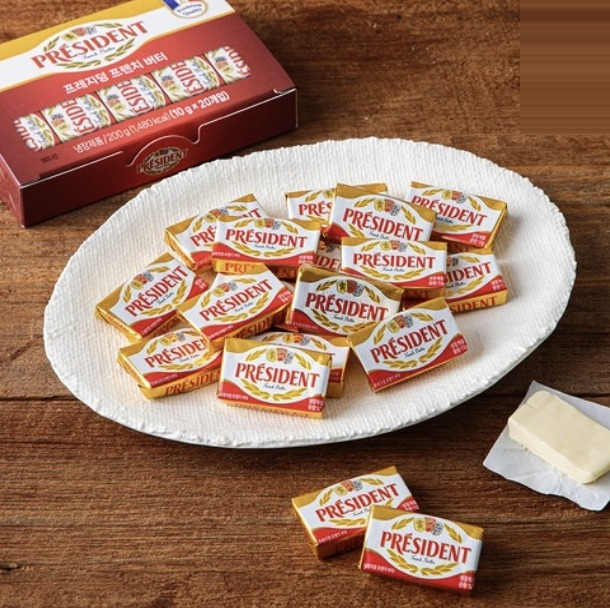
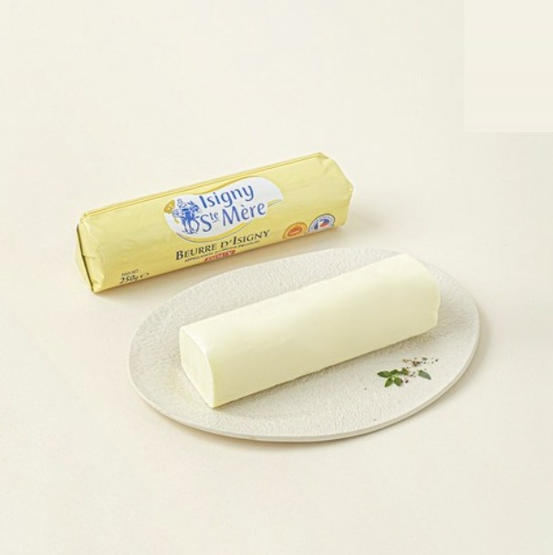
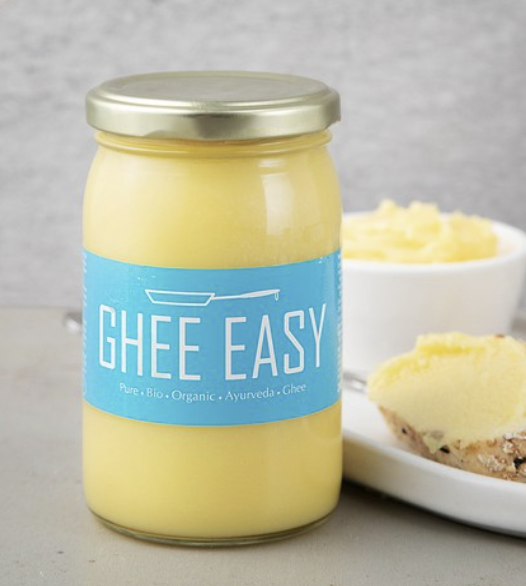
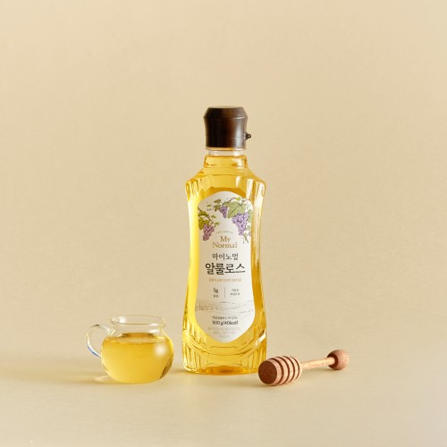
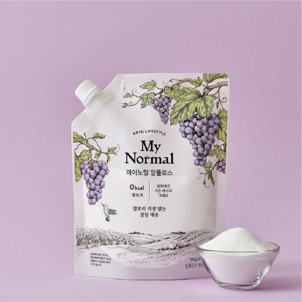
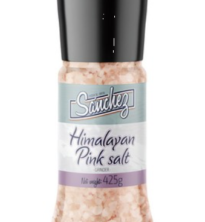
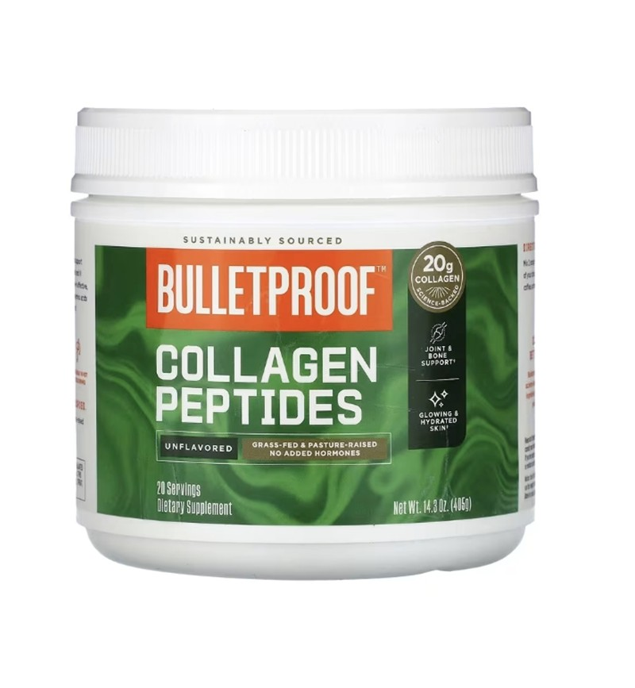

☕ 더클린커피 콜롬비아 스페셜티 방탄커피전용원두
다영's Pick : 일반 원두엔 곰팡이 독소가 많아, 커피 마시고 머리가 아팠다면 원두 탓일 수 있어요. 더클린커피로 바꾼 후 오히려 머리가 맑아졌어요.

☕ 더클린커피 유기농 디카페인
다영's Pick : 스위스워터 공법으로 카페인만 제거해 원두 본연의 향이 그대로예요. 카페인 없이도 방탄커피를 즐기고 싶은 분, 저녁에도 마시고 싶은 분께 추천해요.

🌿 레시틴 파우더 (마이크로 인그리디언츠)
다영's Pick : 유기농 해바라기 원료에 탈유 분말형, 대두·첨가물이 전혀 없어 제 깐깐한 기준을 통과한 제품이에요. 버터와 MCT 오일을 위장에 거칠게 올리지 않고 부드럽게 섞어줘서 지방 소화가 예민한 분도 편하게 마실 수 있어요. 방탄커피의 주인공은 아니지만, 오래 마실 수 있게 해주는 가장 중요한 조연이에요.

🧈 무염 목초버터 : 프레지덩트
다영's Pick : 목초 소의 우유 버터라 오메가-3·CLA가 일반 버터보다 높아 지방의 질이 달라요. 깔끔하고 담백해서 방탄커피 처음 시작하는 분께 권해요.

🧈 무염 목초버터 : 이즈니
다영's Pick : 프랑스 노르망디 AOC 인증 버터라 유지방 함량이 높아 맛이 더 진하고 고소해요. 한 번 써보면 못 돌아간다는 분들이 있을 만큼 풍미가 달라요.

💧 MCT 오일 : 마이노멀
다영's Pick : MCT 오일의 핵심 C8(카프릴산)은 간에서 가장 빠르게 케톤으로 전환되는 지방산이에요. 마이노멀은 C8·C10 중심이라 방탄커피 목적에 딱 맞아요.

💧 MCT 오일 : 포켓용
다영's Pick : 여행이나 외식할 때 간편하게 들고 다니기 좋아요. 작은 가방에도 쏙 들어가고, 뜯어서 바로 넣으면 돼서 어디서든 키토제닉 라이프를 이어갈 수 있어요.

🫙 기버터 (Ghee)
다영's Pick : 유당과 단백질을 제거한 순수 지방이라 유제품 민감한 분도 방탄커피에 부담 없이 쓸 수 있어요. 발연점이 높아 야채·고기 볶을 때도 즐겨 써요.

🍬 알룰로스 : 액체
다영's Pick : 혈당 스파이크 없이 단맛을 낼 수 있는 천연 감미료예요. 실질 칼로리가 낮고, 방탄커피에 잘 녹아요. 스테비아보다 뒷맛이 훨씬 깔끔해요.

🍬 알룰로스 : 분말
다영's Pick : 액체형과 성분은 같지만 계량과 보관이 더 편해요. 양 조절이 세밀하게 필요하면 분말형, 바로 녹여 쓰고 싶다면 액체형이 편해요.

🧂 히말라야 소금
다영's Pick : 방탄커피에 한 꼬집 넣으면 맛이 훨씬 부드럽고 풍미가 깊어져요. 천연 미네랄이 풍부한 히말라야 핑크소금을 그라인더로 매번 신선하게 갈아 써요.

🥛 콜라겐 파우더 (Bulletproof)
다영's Pick : 데이브 아스프리가 매일 10g씩 챙기는 이유는 열에 강해 뜨거운 커피에 타도 성분이 파괴되지 않아서예요. 폐경 후 골밀도 증가 연구도 있어요.